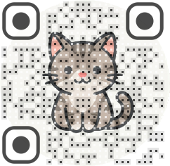

CatBTI（猫BTI）
测一测你是什么猫
CatBTI（猫BTI）仅供娱乐 · 与 MBTI 无关
0 / 31
你的 CatBTI 主猫格
十五维 · 本喵自画像（CatBTI）
同频撸猫榜 TOP 5
Remixed by Koutian Wu (微信: ktwu001)

分享给朋友一起测猫格
想自己 fork 一版？
git clone https://github.com/ut01/CatBTI.git && cd CatBTI && npm install && npm run dev
粘贴到本地终端或 AI 编程助手即可运行并自定义题目与猫格